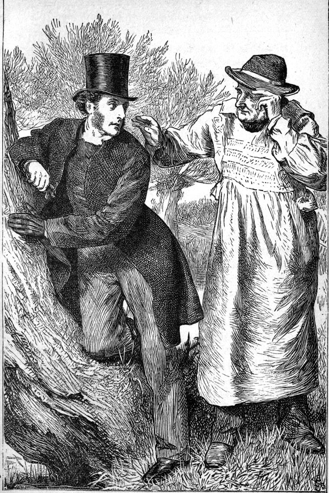

On the next Sunday but one—which was surprising to me when I considered the manner of our last parting—Catherine Weir was in church, for the second time since I had come to the place. As it happened, only as Spenser says—
“It chanced—eternal God that chance did guide,”
—and why I say this, will appear afterwards—I had, in preaching upon, that is, in endeavouring to enforce the Lord’s Prayer by making them think about the meaning of the words they were so familiar with, come to the petition, “Forgive us our debts, as we forgive our debtors;” with which I naturally connected the words of our Lord that follow: “For if ye forgive men their trespasses, your heavenly Father will also forgive you; but if ye forgive not men their trespasses, neither will your Father forgive your trespasses.” I need not tell my reader more of what I said about this, than that I tried to show that even were it possible with God to forgive an unforgiving man, the man himself would not be able to believe for a moment that God did forgive him, and therefore could get no comfort or help or joy of any kind from the forgiveness; so essentially does hatred, or revenge, or contempt, or anything that separates us from man, separate us from God too. To the loving soul alone does the Father reveal Himself; for love alone can understand Him. It is the peace-makers who are His children.
This I said, thinking of no one more than another of my audience. But as I closed my sermon, I could not help fancying that Mrs Oldcastle looked at me with more than her usual fierceness. I forgot all about it, however, for I never seemed to myself to have any hold of, or relation to, that woman. I know I was wrong in being unable to feel my relation to her because I disliked her. But not till years after did I begin to understand how she felt, or recognize in myself a common humanity with her. A sin of my own made me understand her condition. I can hardly explain now; I will tell it when the time comes. When I called upon her next, after the interview last related, she behaved much as if she had forgotten all about it, which was not likely.
In the end of the week after the sermon to which I have alluded, I was passing the Hall-gate on my usual Saturday’s walk, when Judy saw me from within, as she came out of the lodge. She was with me in a moment.
“Mr Walton,” she said, “how could you preach at Grannie as you did last Sunday?”
“I did not preach at anybody, Judy.”
“Oh, Mr Walton!”
“You know I didn’t, Judy. You know that if I had, I would not say I had not.”
“Yes, yes; I know that perfectly,” she said, seriously. “But Grannie thinks you did.”
“How do you know that?”
“By her face.”
“That is all, is it?”
“You don’t think Grannie would say so?”
“No. Nor yet that you could know by her face what she was thinking.”
“Oh! can’t I just? I can read her face—not so well as plain print; but, let me see, as well as what Uncle Stoddart calls black-letter, at least. I know she thought you were preaching at her; and her face said, ‘I shan’t forgive YOU, anyhow. I never forgive, and I won’t for all your preaching.’ That’s what her face said.”
“I am sure she would not say so, Judy,” I said, really not knowing what to say.
“Oh, no; she would not say so. She would say, ‘I always forgive, but I never forget.’ That’s a favourite saying of hers.”
“But, Judy, don’t you think it is rather hypocritical of you to say all this to me about your grandmother when she is so kind to you, and you seem such good friends with her?”
She looked up in my face with an expression of surprise.
“It is all TRUE, Mr Walton,” she said.
“Perhaps. But you are saying it behind her back.”
“I will go home and say it to her face directly.”
She turned to go.
“No, no, Judy. I did not mean that,” I said, taking her by the arm.
“I won’t say you told me to do it. I thought there was no harm in telling you. Grannie is kind to me, and I am kind to her. But Grannie is afraid of my tongue, and I mean her to be afraid of it. It’s the only way to keep her in order. Darling Aunt Winnie! it’s all she’s got to defend her. If you knew how she treats her sometimes, you would be cross with Grannie yourself, Mr Walton, for all your goodness and your white surplice.”
And to my yet greater surprise, the wayward girl burst out crying, and, breaking away from me, ran through the gate, and out of sight amongst the trees, without once looking back.
I pursued my walk, my meditations somewhat discomposed by the recurring question:—Would she go home and tell her grandmother what she had said to me? And, if she did, would it not widen the breach upon the opposite side of which I seemed to see Ethelwyn stand, out of the reach of my help?
I walked quickly on to reach a stile by means of which I should soon leave the little world of Marshmallows quite behind me, and be alone with nature and my Greek Testament. Hearing the sound of horse-hoofs on the road from Addicehead, I glanced up from my pocket-book, in which I had been looking over the thoughts that had at various moments passed through my mind that week, in order to choose one (or more, if they would go together) to be brooded over to-day for my people’s spiritual diet to-morrow—I say I glanced up from my pocket-book, and saw a young man, that is, if I could call myself young still, of distinguished appearance, approaching upon a good serviceable hack. He turned into my road and passed me. He was pale, with a dark moustache, and large dark eyes; sat his horse well and carelessly; had fine features of the type commonly considered Grecian, but thin, and expressive chiefly of conscious weariness. He wore a white hat with crape upon it, white gloves, and long, military-looking boots. All this I caught as he passed me; and I remember them, because, looking after him, I saw him stop at the lodge of the Hall, ring the bell, and then ride through the gate. I confess I did not quite like this; but I got over the feeling so far as to be able to turn to my Testament when I had reached and crossed the stile.
I came home another way, after one of the most delightful days I had ever spent. Having reached the river in the course of my wandering, I came down the side of it towards Old Rogers’s cottage, loitering and looking, quiet in heart and soul and mind, because I had committed my cares to Him who careth for us. The earth was round me—I was rooted, as it were, in it, but the air of a higher life was about me. I was swayed to and fro by the motions of a spiritual power; feelings and desires and hopes passed through me, passed away, and returned; and still my head rose into the truth, and the will of God was the regnant sunlight upon it. I might change my place and condition; new feelings might come forth, and old feelings retire into the lonely corners of my being; but still my heart should be glad and strong in the one changeless thing, in the truth that maketh free; still my head should rise into the sunlight of God, and I should know that because He lived I should live also, and because He was true I should remain true also, nor should any change pass upon me that should make me mourn the decadence of humanity. And then I found that I was gazing over the stump of an old pollard, on which I was leaning, down on a great bed of white water-lilies, that lay in the broad slow river, here broader and slower than in most places. The slanting yellow sunlight shone through the water down to the very roots anchored in the soil, and the water swathed their stems with coolness and freshness, and a universal sense, I doubt not, of watery presence and nurture. And there on their lovely heads, as they lay on the pillow of the water, shone the life-giving light of the summer sun, filling all the spaces between their outspread petals of living silver with its sea of radiance, and making them gleam with the whiteness which was born of them and the sun. And then came a hand on my shoulder, and, turning, I saw the gray head and the white smock of my old friend Rogers, and I was glad that he loved me enough not to be afraid of the parson and the gentleman.

“I’ve found it, sir, I do think,” he said, his brown furrowed old face shining with a yet lovelier light than that which shone from the blossoms of the water-lilies, though, after what I had been thinking about them, it was no wonder that they seemed both to mean the same thing,—both to shine in the light of His countenance.
“Found what, Old Rogers?” I returned, raising myself, and laying my hand in return on his shoulder.
“Why He was displeased with the disciples for not knowing—”
“What He meant about the leaven of the Pharisees,” I interrupted. “Yes, yes, of course. Tell me then.”
“I will try, sir. It was all dark to me for days. For it appeared to me very nat’ral that, seeing they had no bread in the locker, and hearing tell of leaven which they weren’t to eat, they should think it had summat to do with their having none of any sort. But He didn’t seem to think it was right of them to fall into the blunder. For why then? A man can’t be always right. He may be like myself, a foremast-man with no schoolin’ but what the winds and the waves puts into him, and I’m thinkin’ those fishermen the Lord took to so much were something o’ that sort. ‘How could they help it?’ I said to myself, sir. And from that I came to ask myself, ‘Could they have helped it?’ If they couldn’t, He wouldn’t have been vexed with them. Mayhap they ought to ha’ been able to help it. And all at once, sir, this mornin’, it came to me. I don’t know how, but it was give to me, anyhow. And I flung down my rake, and I ran in to the old woman, but she wasn’t in the way, and so I went back to my work again. But when I saw you, sir, a readin’ upon the lilies o’ the field, leastways, the lilies o’ the water, I couldn’t help runnin’ out to tell you. Isn’t it a satisfaction, sir, when yer dead reckonin’ runs ye right in betwixt the cheeks of the harbour? I see it all now.”
“Well, I want to know, old Rogers. I’m not so old as you, and so I MAY live longer; and every time I read that passage, I should like to be able to say to myself, ‘Old Rogers gave me this.’”
“I only hope I’m right, sir. It was just this: their heads was full of their dinner because they didn’t know where it was to come from. But they ought to ha’ known where it always come from. If their hearts had been full of the dinner He gave the five thousand hungry men and women and children, they wouldn’t have been uncomfortable about not having a loaf. And so they wouldn’t have been set upon the wrong tack when He spoke about the leaven of the Pharisees and Sadducees; and they would have known in a moment what He meant. And if I hadn’t been too much of the same sort, I wouldn’t have started saying it was but reasonable to be in the doldrums because they were at sea with no biscuit in the locker.”
“You’re right; you must be right, old Rogers. It’s as plain as possible,” I cried, rejoiced at the old man’s insight. “Thank you. I’ll preach about it to-morrow. I thought I had got my sermon in Foxborough Wood, but I was mistaken: you had got it.”
But I was mistaken again. I had not got my sermon yet.
I walked with him to his cottage and left him, after a greeting with the “old woman.” Passing then through the village, and seeing by the light of her candle the form of Catherine Weir behind her counter, I went in. I thought old Rogers’s tobacco must be nearly gone, and I might safely buy some more. Catherine’s manner was much the same as usual. But as she was weighing my purchase, she broke out all at once:
“It’s no use your preaching at me, Mr Walton. I cannot, I WILL not forgive. I will do anything BUT forgive. And it’s no use.”
“It is not I that say it, Catherine. It is the Lord himself.”
I saw no great use in protesting my innocence, yet I thought it better to add—
“And I was not preaching AT you. I was preaching to you, as much as to any one there, and no more.”
Of this she took no notice, and I resumed:
“Just think of what HE says; not what I say.”
“I can’t help it. If He won’t forgive me, I must go without it. I can’t forgive.”
I saw that good and evil were fighting in her, and felt that no words of mine could be of further avail at the moment. The words of our Lord had laid hold of her; that was enough for this time. Nor dared I ask her any questions. I had the feeling that it would hurt, not help. All I could venture to say, was:
“I won’t trouble you with talk, Catherine. Our Lord wants to talk to you. It is not for me to interfere. But please to remember, if ever you think I can serve you in any way, you have only to send for me.”
She murmured a mechanical thanks, and handed me my parcel. I paid for it, bade her good night, and left the shop.
“O Lord,” I said in my heart, as I walked away, “what a labour Thou hast with us all! Shall we ever, some day, be all, and quite, good like Thee? Help me. Fill me with Thy light, that my work may all go to bring about the gladness of Thy kingdom—the holy household of us brothers and sisters—all Thy children.”
And now I found that I wanted very much to see my friend Dr Duncan. He received me with his stately cordiality, and a smile that went farther than all his words of greeting.
“Come now, Mr Walton, I am just going to sit down to my dinner, and you must join me. I think there will be enough for us both. There is, I believe, a chicken a-piece for us, and we can make up with cheese and a glass of—would you believe it?—my own father’s port. He was fond of port—the old man—though I never saw him with one glass more aboard than the registered tonnage. He always sat light on the water. Ah, dear me! I’m old myself now.”
“But what am I to do with Mrs Pearson?” I said. “There’s some chef-d’oeuvre of hers waiting for me by this time. She always treats me particularly well on Saturdays and Sundays.”
“Ah! then, you must not stop with me. You will fare better at home.”
“But I should much prefer stopping with you. Couldn’t you send a message for me?”
“To be sure. My boy will run with it at once.”
Now, what is the use of writing all this? I do not know. Only that even a tete-a-tete dinner with an old friend, now that I am an old man myself, has such a pearly halo about it in the mists of the past, that every little circumstance connected with it becomes interesting, though it may be quite unworthy of record. So, kind reader, let it stand.
We sat down to our dinner, so simple and so well-cooked that it was just what I liked. I wanted very much to tell my friend what had occurred in Catherine’s shop, but I would not begin till we were safe from interruption; and so we chatted away concerning many things, he telling me about his seafaring life, and I telling him some of the few remarkable things that had happened to me in the course of my life-voyage. There is no man but has met with some remarkable things that other people would like to know, and which would seem stranger to them than they did at the time to the person to whom they happened.
At length I brought our conversation round to my interview with Catherine Weir.
“Can you understand,” I said, “a woman finding it so hard to forgive her own father?”
“Are you sure it is her father?” he returned.
“Surely she has not this feeling towards more than one. That she has it towards her father, I know.”
“I don’t know,” he answered. “I have known resentment preponderate over every other feeling and passion—in the mind of a woman too. I once heard of a good woman who cherished this feeling against a good man because of some distrustful words he had once addressed to herself. She had lived to a great age, and was expressing to her clergyman her desire that God would take her away: she had been waiting a long time. The clergyman—a very shrewd as well as devout man, and not without a touch of humour, said: ‘Perhaps God doesn’t mean to let you die till you’ve forgiven Mr—-.’ She was as if struck with a flash of thought, sat silent during the rest of his visit, and when the clergyman called the next day, he found Mr —— and her talking together very quietly over a cup of tea. And she hadn’t long to wait after that, I was told, but was gathered to her fathers—or went home to her children, whichever is the better phrase.”
“I wish I had had your experience, Dr Duncan,” I said.
“I have not had so much experience as a general practitioner, because I have been so long at sea. But I am satisfied that until a medical man knows a good deal more about his patient than most medical men give themselves the trouble to find out, his prescriptions will partake a good deal more than is necessary of haphazard.—As to this question of obstinate resentment, I know one case in which it is the ruling presence of a woman’s life—the very light that is in her is resentment. I think her possessed myself.
“Tell me something about her.”
“I will. But even to you I will mention no names. Not that I have her confidence in the least. But I think it is better not. I was called to attend a lady at a house where I had never yet been.”
“Was it in—-?” I began, but checked myself. Dr Duncan smiled and went on without remark. I could see that he told his story with great care, lest, I thought, he should let anything slip that might give a clue to the place or people.
“I was led up into an old-fashioned, richly-furnished room. A great wood-fire burned on the hearth. The bed was surrounded with heavy dark curtains, in which the shadowy remains of bright colours were just visible. In the bed lay one of the loveliest young creatures I had ever seen. And, one on each side, stood two of the most dreadful-looking women I had ever beheld. Still as death, while I examined my patient, they stood, with moveless faces, one as white as the other. Only the eyes of both of them were alive. One was evidently mistress, and the other servant. The latter looked more self-contained than the former, but less determined and possibly more cruel. That both could be unkind at least, was plain enough. There was trouble and signs of inward conflict in the eyes of the mistress. The maid gave no sign of any inside to her at all, but stood watching her mistress. A child’s toy was lying in a corner of the room.”
I may here interrupt my friend’s story to tell my reader that I may be mingling some of my own conclusions with what the good man told me of his. For he will see well enough already that I had in a moment attached his description to persons I knew, and, as it turned out, correctly, though I could not be certain about it till the story had advanced a little beyond this early stage of its progress.
“I found the lady very weak and very feverish—a quick feeble pulse, now bounding, and now intermitting—and a restlessness in her eye which I felt contained the secret of her disorder. She kept glancing, as if involuntarily, towards the door, which would not open for all her looking, and I heard her once murmur to herself—for I was still quick of hearing then—‘He won’t come!’ Perhaps I only saw her lips move to those words—I cannot be sure, but I am certain she said them in her heart. I prescribed for her as far as I could venture, but begged a word with her mother. She went with me into an adjoining room.
“‘The lady is longing for something,’ I said, not wishing to be so definite as I could have been.
“The mother made no reply. I saw her lips shut yet closer than before.
“‘She is your daughter, is she not?’
“‘Yes,’—very decidedly.
“‘Could you not find out what she wishes?’
“‘Perhaps I could guess.’
“‘I do not think I can do her any good till she has what she wants.’
“‘Is that your mode of prescribing, doctor?’ she said, tartly.
“‘Yes, certainly,’ I answered—‘in the present case. Is she married?’
“‘Yes.’
“‘Has she any children?’
“‘One daughter.’
“‘Let her see her, then.’
“‘She does not care to see her.’
“‘Where is her husband?’
“‘Excuse me, doctor; I did not send for you to ask questions, but to give advice.’
“‘And I came to ask questions, in order that I might give advice. Do you think a human being is like a clock, that can be taken to pieces, cleaned, and put together again?’
“‘My daughter’s condition is not a fit subject for jesting.’
“‘Certainly not. Send for her husband, or the undertaker, whichever you please,’ I said, forgetting my manners and my temper together, for I was more irritable then than I am now, and there was something so repulsive about the woman, that I felt as if I was talking to an evil creature that for her own ends, though what I could not tell, was tormenting the dying lady.
“‘I understood you were a GENTLEMAN—of experience and breeding.’
“‘I am not in the question, madam. It is your daughter.’
“‘She shall take your prescription.’
“‘She must see her husband if it be possible.’
“‘It is not possible.’
“‘Why?’
“‘I say it is not possible, and that is enough. Good morning.’
“I could say no more at that time. I called the next day. She was just the same, only that I knew she wanted to speak to me, and dared not, because of the presence of the two women. Her troubled eyes seemed searching mine for pity and help, and I could not tell what to do for her. There are, indeed, as some one says, strongholds of injustice and wrong into which no law can enter to help.
“One afternoon, about a week after my first visit, I was sitting by her bedside, wondering what could be done to get her out of the clutches of these tormentors, who were, evidently to me, consuming her in the slow fire of her own affections, when I heard a faint noise, a rapid foot in the house so quiet before; heard doors open and shut, then a dull sound of conflict of some sort. Presently a quick step came up the oak-stair. The face of my patient flushed, and her eyes gleamed as if her soul would come out of them. Weak as she was she sat up in bed, almost without an effort, and the two women darted from the room, one after the other.
“‘My husband!’ said the girl—for indeed she was little more in age, turning her face, almost distorted with eagerness, towards me.
“‘Yes, my dear,’ I said, ‘I know. But you must be as still as you can, else you will be very ill. Do keep quiet.’
“‘I will, I will,’ she gasped, stuffing her pocket-handkerchief actually into her mouth to prevent herself from screaming, as if that was what would hurt her. ‘But go to him. They will murder him.’
“That moment I heard a cry, and what sounded like an articulate imprecation, but both from a woman’s voice; and the next, a young man—as fine a fellow as I ever saw—dressed like a game-keeper, but evidently a gentleman, walked into the room with a quietness that strangely contrasted with the dreadful paleness of his face and with his disordered hair; while the two women followed, as red as he was white, and evidently in fierce wrath from a fruitless struggle with the powerful youth. He walked gently up to his wife, whose outstretched arms and face followed his face as he came round the bed to where she was at the other side, till arms, and face, and head, fell into his embrace.
“I had gone to the mother.
“‘Let us have no scene now,’ I said, ‘or her blood will be on your head.’
“She took no notice of what I said, but stood silently glaring, not gazing, at the pair. I feared an outburst, and had resolved, if it came, to carry her at once from the room, which I was quite able to do then, Mr Walton, though I don’t look like it now. But in a moment more the young man, becoming uneasy at the motionlessness of his wife, lifted up her head, and glanced in her face. Seeing the look of terror in his, I hastened to him, and lifting her from him, laid her down—dead. Disease of the heart, I believe. The mother burst into a shriek—not of horror, or grief, or remorse, but of deadly hatred.
“‘Look at your work!’ she cried to him, as he stood gazing in stupor on the face of the girl. ‘You said she was yours, not mine; take her. You may have her now you have killed her.’
“‘He may have killed her; but you have MURDERED her, madam,’ I said, as I took the man by the arm, and led him away, yielding like a child. But the moment I got him out of the house, he gave a groan, and, breaking away from me, rushed down a road leading from the back of the house towards the home-farm. I followed, but he had disappeared. I went on; but before I could reach the farm, I heard the gallop of a horse, and saw him tearing away at full speed along the London road. I never heard more of him, or of the story. Some women can be secret enough, I assure you.”
I need not follow the rest of our conversation. I could hardly doubt whose was the story I had heard. It threw a light upon several things about which I had been perplexed. What a horror of darkness seemed to hang over that family! What deeds of wickedness! But the reason was clear: the horror came from within; selfishness, and fierceness of temper were its source—no unhappy DOOM. The worship of one’s own will fumes out around the being an atmosphere of evil, an altogether abnormal condition of the moral firmament, out of which will break the very flames of hell. The consciousness of birth and of breeding, instead of stirring up to deeds of gentleness and “high emprise,” becomes then but an incentive to violence and cruelty; and things which seem as if they could not happen in a civilized country and a polished age, are proved as possible as ever where the heart is unloving, the feelings unrefined, self the centre, and God nowhere in the man or woman’s vision. The terrible things that one reads in old histories, or in modern newspapers, were done by human beings, not by demons.
I did not let my friend know that I knew all that he concealed; but I may as well tell my reader now, what I could not have told him then. I know all the story now, and, as no better place will come, as far as I can see, I will tell it at once, and briefly.
Dorothy—a wonderful name, THE GIFT OF GOD, to be so treated, faring in this, however, like many other of God’s gifts—Dorothy Oldcastle was the eldest daughter of Jeremy and Sibyl Oldcastle, and the sister therefore of Ethelwyn. Her father, who was an easy-going man, entirely under the dominion of his wife, died when she was about fifteen, and her mother sent her to school, with especial recommendation to the care of a clergyman in the neighbourhood, whom Mrs Oldcastle knew; for, somehow—and the fact is not so unusual as to justify especial inquiry here—though she paid no attention to what our Lord or His apostles said, nor indeed seemed to care to ask herself if what she did was right, or what she accepted (I cannot say BELIEVED) was true, she had yet a certain (to me all but incomprehensible) leaning to the clergy. I think it belongs to the same kind of superstition which many of our own day are turning to. Offered the Spirit of God for the asking, offered it by the Lord himself, in the misery of their unbelief they betake themselves to necromancy instead, and raise the dead to ask their advice, AND FOLLOW IT, and will find some day that Satan had not forgotten how to dress like an angel of light. Nay, he can be more cunning with the demands of the time. We are clever: he will be cleverer. Why should he dress and not speak like an angel of light? Why should he not give good advice if that will help to withdraw people by degrees from regarding the source of all good? He knows well enough that good advice goes for little, but that what fills the heart and mind goes for much. What religion is there in being convinced of a future state? Is that to worship God? It is no more religion than the belief that the sun will rise to-morrow is religion. It may be a source of happiness to those who could not believe it before, but it is not religion. Where religion comes that will certainly be likewise, but the one is not the other. The devil can afford a kind of conviction of that. It costs him little. But to believe that the spirits of the departed are the mediators between God and us is essential paganism—to call it nothing worse; and a bad enough name too since Christ has come and we have heard and seen the only-begotten of the Father. Thus the instinctive desire for the wonderful, the need we have of a revelation from above us, denied its proper food and nourishment, turns in its hunger to feed upon garbage. As a devout German says—I do not quote him quite correctly—“Where God rules not, demons will.” Let us once see with our spiritual eyes the Wonderful, the Counsellor, and surely we shall not turn from Him to seek elsewhere the treasures of wisdom and knowledge.
Those who sympathize with my feeling in regard to this form of the materialism of our day, will forgive this divergence. I submit to the artistic blame of such as do not, and return to my story.
Dorothy was there three or four years. I said I would be brief. She and the clergyman’s son fell in love with each other. The mother heard of it, and sent for her home. She had other views for her. Of course, in such eyes, a daughter’s FANCY was, irrespective of its object altogether, a thing to be sneered at. But she found, to her fierce disdain, that she had not been able to keep all her beloved obstinacy to herself: she had transmitted a portion of it to her daughter. But in her it was combined with noble qualities, and, ceasing to be the evil thing it was in her mother, became an honourable firmness, rendering her able to withstand her mother’s stormy importunities. Thus Nature had begun to right herself—the right in the daughter turning to meet and defy the wrong in the mother, and that in the same strength of character which the mother had misused for evil and selfish ends. And thus the bad breed was broken. She was and would be true to her lover. The consequent SCENES were dreadful. The spirit but not the will of the girl was all but broken. She felt that she could not sustain the strife long. By some means, unknown to my informant, her lover contrived to communicate with her. He had, through means of relations who had great influence with Government, procured a good appointment in India, whither he must sail within a month. The end was that she left her mother’s house. Mr Gladwyn was waiting for her near, and conducted her to his father’s, who had constantly refused to aid Mrs Oldcastle by interfering in the matter. They were married next day by the clergyman of a neighbouring parish. But almost immediately she was taken so ill, that it was impossible for her to accompany her husband, and she was compelled to remain behind at the rectory, hoping to join him the following year.
Before the time arrived, she gave birth to my little friend Judy; and her departure was again delayed by a return of her old complaint, probably the early stages of the disease of which she died. Then, just as she was about to set sail for India, news arrived that Mr Gladwyn had had a sunstroke, and would have leave of absence and come home as soon as he was able to be moved; so that instead of going out to join him, she must wait for him where she was. His mother had been dead for some time. His father, an elderly man of indolent habits, was found dead in his chair one Sunday morning soon after the news had arrived of the illness of his son, to whom he was deeply attached. And so the poor young creature was left alone with her child, without money, and in weak health. The old man left nothing behind him but his furniture and books. And nothing could be done in arranging his affairs till the arrival of his son, of whom the last accounts had been that he was slowly recovering. In the meantime his wife was in want of money, without a friend to whom she could apply. I presume that one of the few parishioners who visited at the rectory had written to acquaint Mrs Oldcastle with the condition in which her daughter was left, for, influenced by motives of which I dare not take upon me to conjecture an analysis, she wrote, offering her daughter all that she required in her old home. Whether she fore-intended her following conduct, or old habit returned with the return of her daughter, I cannot tell; but she had not been more than a few days in the house before she began to tyrannise over her, as in old times, and although Mrs Gladwyn’s health, now always weak, was evidently failing in consequence, she either did not see the cause, or could not restrain her evil impulses. At length the news arrived of Mr Gladwyn’s departure for home. Perhaps then for the first time the temptation entered her mind to take her revenge upon him, by making her daughter’s illness a pretext for refusing him admission to her presence. She told her she should not see him till she was better, for that it would make her worse; persisted in her resolution after his arrival; and effected, by the help of Sarah, that he should not gain admittance to the house, keeping all the doors locked except one. It was only by the connivance of Ethelwyn, then a girl about fifteen, that he was admitted by the underground way, of which she unlocked the upper door for his entrance. She had then guided him as far as she dared, and directed him the rest of the way to his wife’s room.
My reader will now understand how it came about in the process of writing these my recollections, that I have given such a long chapter chiefly to that one evening spent with my good friend, Dr Duncan; for he will see, as I have said, that what he told me opened up a good deal to me.
I had very little time for the privacy of the church that night. Dark as it was, however, I went in before I went home: I had the key of the vestry-door always in my pocket. I groped my way into the pulpit, and sat down in the darkness, and thought. Nor did my personal interest in Dr Duncan’s story make me forget poor Catherine Weir and the terrible sore in her heart, the sore of unforgivingness. And I saw that of herself she would not, could not, forgive to all eternity; that all the pains of hell could not make her forgive, for that it was a divine glory to forgive, and must come from God. And thinking of Mrs Oldcastle, I saw that in ourselves we could be sure of no safety, not from the worst and vilest sins; for who could tell how he might not stupify himself by degrees, and by one action after another, each a little worse than the former, till the very fires of Sinai would not flash into eyes blinded with the incense arising to the golden calf of his worship? A man may come to worship a devil without knowing it. Only by being filled with a higher spirit than our own, which, having caused our spirits, is one with our spirits, and is in them the present life principle, are we or can we be safe from this eternal death of our being. This spirit was fighting the evil spirit in Catherine Weir: how was I to urge her to give ear to the good? If will would but side with God, the forces of self, deserted by their leader, must soon quit the field; and the woman—the kingdom within her no longer torn by conflicting forces—would sit quiet at the feet of the Master, reposing in that rest which He offered to those who could come to Him. Might she not be roused to utter one feeble cry to God for help? That would be one step towards the forgiveness of others. To ask something for herself would be a great advance in such a proud nature as hers. And to ask good heartily is the very next step to giving good heartily.
Many thoughts such as these passed through my mind, chiefly associated with her. For I could not think how to think about Mrs Oldcastle yet. And the old church gloomed about me all the time. And I kept lifting up my heart to the God who had cared to make me, and then drew me to be a preacher to my fellows, and had surely something to give me to say to them; for did He not choose so to work by the foolishness of preaching?—Might not my humble ignorance work His will, though my wrath could not work His righteousness? And I descended from the pulpit thinking with myself, “Let Him do as He will. Here I am. I will say what I see: let Him make it good.”
And the next morning, I spoke about the words of our Lord:
“If ye then, being evil, know how to give good gifts to your children, how much more shall your heavenly Father give the Holy Spirit to them that ask Him!”
And I looked to see. And there Catherine Weir sat, looking me in the face.
There likewise sat Mrs Oldcastle, looking me in the face too.
And Judy sat there, also looking me in the face, as serious as man could wish grown woman to look.